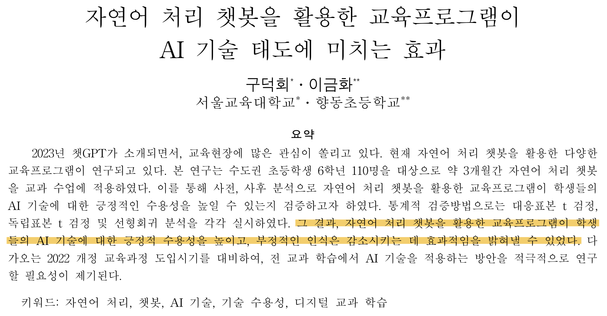
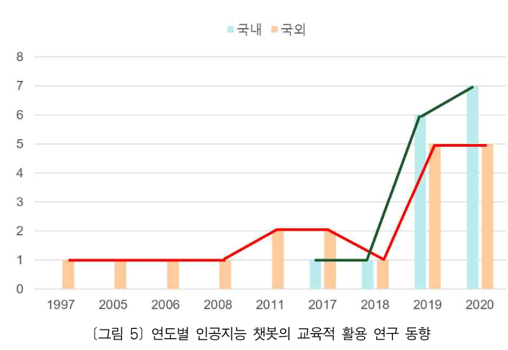
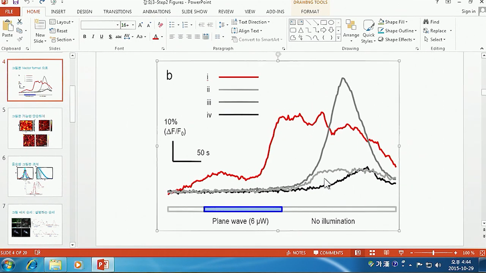
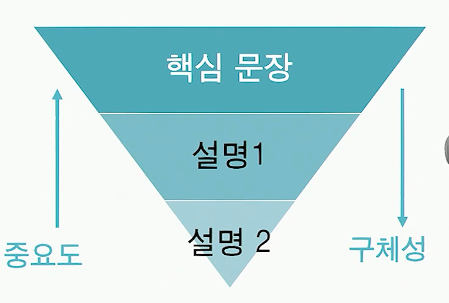
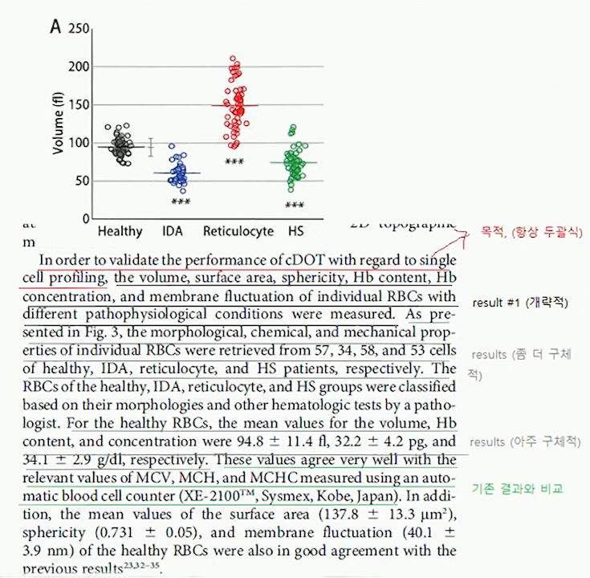
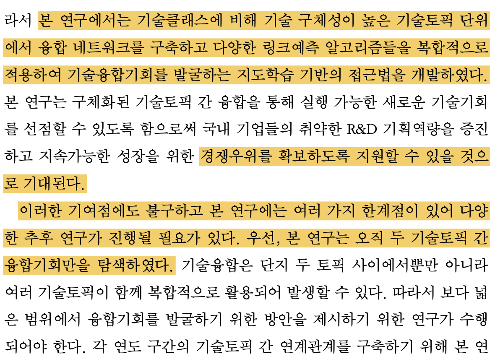

<!DOCTYPE html>
<html lang="en">
  <head>
    <meta charset="utf-8" />
    <meta name="viewport" content="width=device-width, initial-scale=1.0, maximum-scale=1.0, user-scalable=no" />

    <title></title>
    <link rel="stylesheet" href="dist/reveal.css" />
    <link rel="stylesheet" href="dist/theme/white.css" id="theme" />
    <link rel="stylesheet" href="plugin/highlight/zenburn.css" />
	<link rel="stylesheet" href="css/layout.css" />
	<link rel="stylesheet" href="plugin/customcontrols/style.css">


    <link rel="stylesheet" href="css/style.css" />

    <script defer src="dist/fontawesome/all.min.js"></script>

	<script type="text/javascript">
		var forgetPop = true;
		function onPopState(event) {
			if(forgetPop){
				forgetPop = false;
			} else {
				parent.postMessage(event.target.location.href, "app://obsidian.md");
			}
        }
		window.onpopstate = onPopState;
		window.onmessage = event => {
			if(event.data == "reload"){
				window.document.location.reload();
			}
			forgetPop = true;
		}

		function fitElements(){
			const itemsToFit = document.getElementsByClassName('fitText');
			for (const item in itemsToFit) {
				if (Object.hasOwnProperty.call(itemsToFit, item)) {
					var element = itemsToFit[item];
					fitElement(element,1, 1000);
					element.classList.remove('fitText');
				}
			}
		}

		function fitElement(element, start, end){

			let size = (end + start) / 2;
			element.style.fontSize = `${size}px`;

			if(Math.abs(start - end) < 1){
				while(element.scrollHeight > element.offsetHeight){
					size--;
					element.style.fontSize = `${size}px`;
				}
				return;
			}

			if(element.scrollHeight > element.offsetHeight){
				fitElement(element, start, size);
			} else {
				fitElement(element, size, end);
			}		
		}


		document.onreadystatechange = () => {
			fitElements();
			if (document.readyState === 'complete') {
				if (window.location.href.indexOf("?export") != -1){
					parent.postMessage(event.target.location.href, "app://obsidian.md");
				}
				if (window.location.href.indexOf("print-pdf") != -1){
					let stateCheck = setInterval(() => {
						clearInterval(stateCheck);
						window.print();
					}, 250);
				}
			}
	};


        </script>
  </head>
  <body>
    <div class="reveal">
      <div class="slides"><section  data-markdown><script type="text/template"><!-- .slide: class="drop" -->
<div class="" style="position: absolute; left: 0px; top: 0px; height: 700px; width: 1200px; min-height: 700px; display: flex; flex-direction: column; align-items: center; justify-content: center" absolute="true">

<div class="has-dark-background" style="background-color: #555555; position: absolute; left: 0%; top: 5%; height: 3%; width: 100%; display: flex; flex-direction: column; align-items: center; justify-content: center" >

Lab Seminar<!-- .element: style="font-size: 13pt; color: white; padding: 10px; box-sizing: border-box" -->
</div>

<div class="" style="position: absolute; left: 0%; top: 20%; height: 50%; width: 100%; display: flex; flex-direction: column; align-items: center; justify-content: center" >

# 학술논문작성법 (KAIST, 박용근 교수님)

</div>
<div class="" style="position: absolute; left: 0%; top: 70%; height: 5%; width: 100%; display: flex; flex-direction: column; align-items: center; justify-content: center" >


<center> 컴퓨터교육과 정솔 <br>
2024.05.22 (수) </center>
</div>
</div></script></section><section  data-markdown><script type="text/template"><!-- .slide: class="drop" -->
<div class="" style="position: absolute; left: 0px; top: 0px; height: 700px; width: 1200px; min-height: 700px; display: flex; flex-direction: column; align-items: center; justify-content: center" absolute="true">

## 효과적인 논문 작성 순서


</div></script></section><section  data-markdown><script type="text/template"><!-- .slide: class="drop" -->
<div class="" style="position: absolute; left: 0px; top: 0px; height: 700px; width: 1200px; min-height: 700px; display: flex; flex-direction: column; align-items: center; justify-content: center" absolute="true">

<div class="" style="position: absolute; left: 10%; top: 5%; height: 100%; width: 46%; display: flex; flex-direction: column; align-items: center; justify-content: center" >

## Basic Structure 1 : 결론
* 한 문장으로 요약할 수 있는 연구의 **핵심**  <br>:  새로 알아낸 가치있는 결과
* 결론을 먼저 쓰고 논문을 작성 <br>: 결론을 상기하며 일관성유지
* 핵심어 + 핵심어 + 핵심어
</div>

<div class="" style="position: absolute; left: 50%; top: 5%; height: 100%; width: 46%; display: flex; flex-direction: column; align-items: center; justify-content: center" >



</div>
</div></script></section><section  data-markdown><script type="text/template"><!-- .slide: class="drop" -->
<div class="" style="position: absolute; left: 0px; top: 0px; height: 700px; width: 1200px; min-height: 700px; display: flex; flex-direction: column; align-items: center; justify-content: center" absolute="true">

<div class="" style="position: absolute; left: 0%; top: 5%; height: 20%; width: 100%; display: flex; flex-direction: column; align-items: center; justify-content: center" >

## Basic Structure 2 : 구성
</div>

<div class="" style="position: absolute; left: 0%; top: 20%; height: undefined%; width: 46%; display: flex; flex-direction: column; align-items: center; justify-content: center" >


### 논문의 구성 짜기
: 결론에 가장 잘 도달하도록!<!-- .element: style="margin-top: -10px" -->
* 원리 : 이 방법의 원리가 어떤 것이냐면 `$\cdots$`
* 실험1 + 결과1 : 그래서 실험1을 해보았더니 결과1이 나왔는데 
* 논의 1 : 이 결과는 이런 의미라서 중요하고
* 저런 경우에도 되는 지 보기 위해 실험 2를 해보니
* 결과 2가 나왔는데
* 이 결과가 왜 말이 되느냐면 기존 논문에 의하면 / 이론적으로 계산해보면 / 검증해보면 `$\cdots$`

</div>

<div class="" style="position: absolute; left: 50%; top: 20%; height: undefined%; width: 46%; display: flex; flex-direction: column; align-items: center; justify-content: center" >

### 논문의 구성은 그림으로
: 제목과 그림만 보고 이해할 수 있는 논문이 효과적<!-- .element: style="margin-top: -10px; margin-bottom: -10px" -->
* 그림 1 : 원리<br>


* 그림 2 : 결과1


  
* 그림 3 : 결과 2


</div>
</div></script></section><section  data-markdown><script type="text/template"><!-- .slide: class="drop" -->
<div class="" style="position: absolute; left: 0px; top: 0px; height: 700px; width: 1200px; min-height: 700px; display: flex; flex-direction: column; align-items: center; justify-content: center" absolute="true">

## 그림 Figures

* 똑같은 내용이라도 좋은 그림을 쓰면 논문의 퀄리티가 높아짐
* 내용을 효과적으로 전달하기 위한 그림과 배치를 고민 (ex. 중요한 그림은 크게)

### 논문 그림 작업도

</div></script></section><section  data-markdown><script type="text/template"><!-- .slide: class="drop" -->
<div class="" style="position: absolute; left: 0px; top: 0px; height: 700px; width: 1200px; min-height: 700px; display: flex; flex-direction: column; align-items: center; justify-content: center" absolute="true">

### PowerPoint를 이용한 그림 관리와 벡터이미지 수정

* matplotlib to svg `$\phantom{xxxxxxxx}$`
```python
  # plt : matplot figure
  plt.savefig("filename.svg")
```
* insert
* modify
* export as image(svg, tiff)

<div class="" style="position: absolute; left: 40%; top: 35%; height: undefined%; width: undefined%; display: flex; flex-direction: column; align-items: center; justify-content: center" >
 


</div>
</div></script></section><section  data-markdown><script type="text/template"><!-- .slide: class="drop" -->
<div class="" style="position: absolute; left: 0px; top: 0px; height: 700px; width: 1200px; min-height: 700px; display: flex; flex-direction: column; align-items: center; justify-content: center" absolute="true">

<div class="" style="position: absolute; left: 5%; top: 5%; height: 100%; width: 46%; display: flex; flex-direction: column; align-items: center; justify-content: center" >

## 결과 Results
* 그림(또는 표)의 결과를 빠짐없이 논리적으로 설명
* 하나의 문단에는 하나의 내용만 담을 것
* 문단은 항상 두괄식으로<br>


* 문단 내 논리 흐름<br> 
<div class="mermaid">
graph LR
A[Narrative Explanation];
B[Justification];
C[Logical Development];
A --> B;
B --> C;

</div>


</div>

<div class="" style="position: absolute; left: 50%; top: 5%; height: 100%; width: 46%; display: flex; flex-direction: column; align-items: center; justify-content: center" >



</div>
</div></script></section><section  data-markdown><script type="text/template"><!-- .slide: class="drop" -->
<div class="" style="position: absolute; left: 0px; top: 0px; height: 700px; width: 1200px; min-height: 700px; display: flex; flex-direction: column; align-items: center; justify-content: center" absolute="true">

<div class="" style="position: absolute; left: 0%; top: 5%; height: 20%; width: 100%; display: flex; flex-direction: column; align-items: center; justify-content: center" >

## 논의 및 결론 Discussion & Conclusion
</div>

<div class="" style="position: absolute; left: 4%; top: 20%; height: undefined%; width: 46%; display: flex; flex-direction: column; align-items: center; justify-content: center" >

### 결과 `$\rightarrow$` 결론 논리 흐름
### 논의 및 결론의 내용
* 연구의 중요성 <br><span class="src">장점 강조는 구체적으로</span>
* 새로 알게된 결과 <br><span class="src">기존 연구 대비 significant advance가 있음을 강조</span>
* 연구 결과로 인한 전망 및  의의
* 연구의 한계 <br><span class="src">Reviewer가 공격할 약점을 미리 언급<br>대안/보충설명으로 보완</span>
</div>

<div class="" style="position: absolute; left: 50%; top: undefined%; height: undefined%; width: 46%; display: flex; flex-direction: column; align-items: center; justify-content: center" >




</div>
</div></script></section><section  data-markdown><script type="text/template"><!-- .slide: class="drop" -->
<div class="" style="position: absolute; left: 0px; top: 0px; height: 700px; width: 1200px; min-height: 700px; display: flex; flex-direction: column; align-items: center; justify-content: center" absolute="true">

### 논문 작성시 유의사항
1. 쉬운 단어로 쉽게 설명 <br><span class="src">표현은 쉽게 내용은 깊게</span>
2. 독자의 입장에서 고민 <br><span class="src">논리 흐름, 제기될 수 있는 의문 고려</span>
3. 비중과 위치로 중요한 부분을 강조
4. 모든 과정과 결과를 논문에 다 넣을 필요 없음<br><span class="src">사소한 점을 장황하게 쓰거나 얼마나 고생했는지 표현하려고 하지 마라</span>
</div></script></section><section  data-markdown><script type="text/template"><!-- .slide: class="drop" -->
<div class="" style="position: absolute; left: 0px; top: 0px; height: 700px; width: 1200px; min-height: 700px; display: flex; flex-direction: column; align-items: center; justify-content: center" absolute="true">

# 감사합니다
</div></script></section></div>
    </div>

    <script src="dist/reveal.js"></script>

    <script src="plugin/markdown/markdown.js"></script>
    <script src="plugin/highlight/highlight.js"></script>
    <script src="plugin/zoom/zoom.js"></script>
    <script src="plugin/notes/notes.js"></script>
    <script src="plugin/math/math.js"></script>
	<script src="plugin/mermaid/mermaid.js"></script>
	<script src="plugin/chart/chart.min.js"></script>
	<script src="plugin/chart/plugin.js"></script>
	<script src="plugin/customcontrols/plugin.js"></script>

    <script>
      function extend() {
        var target = {};
        for (var i = 0; i < arguments.length; i++) {
          var source = arguments[i];
          for (var key in source) {
            if (source.hasOwnProperty(key)) {
              target[key] = source[key];
            }
          }
        }
        return target;
      }

	  function isLight(color) {
		let hex = color.replace('#', '');

		// convert #fff => #ffffff
		if(hex.length == 3){
			hex = `${hex[0]}${hex[0]}${hex[1]}${hex[1]}${hex[2]}${hex[2]}`;
		}

		const c_r = parseInt(hex.substr(0, 2), 16);
		const c_g = parseInt(hex.substr(2, 2), 16);
		const c_b = parseInt(hex.substr(4, 2), 16);
		const brightness = ((c_r * 299) + (c_g * 587) + (c_b * 114)) / 1000;
		return brightness > 155;
	}

	var bgColor = getComputedStyle(document.documentElement).getPropertyValue('--r-background-color').trim();
	var isLight = isLight(bgColor);

	if(isLight){
		document.body.classList.add('has-light-background');
	} else {
		document.body.classList.add('has-dark-background');
	}

      // default options to init reveal.js
      var defaultOptions = {
        controls: true,
        progress: true,
        history: true,
        center: true,
        transition: 'default', // none/fade/slide/convex/concave/zoom
        plugins: [
          RevealMarkdown,
          RevealHighlight,
          RevealZoom,
          RevealNotes,
          RevealMath.MathJax3,
		  RevealMermaid,
		  RevealChart,
		  RevealCustomControls,
        ],


    	allottedTime: 120 * 1000,

		mathjax3: {
			mathjax: 'plugin/math/mathjax/tex-mml-chtml.js',
		},
		markdown: {
		  gfm: true,
		  mangle: true,
		  pedantic: false,
		  smartLists: false,
		  smartypants: false,
		},

		mermaid: {
			theme: isLight ? 'default' : 'dark',
		},

		customcontrols: {
			controls: [
			]
		},
      };

      // options from URL query string
      var queryOptions = Reveal().getQueryHash() || {};

      var options = extend(defaultOptions, {"width":1200,"height":700,"margin":0.2,"controls":false,"progress":true,"slideNumber":true,"transition":"slide","transitionSpeed":"default"}, queryOptions);
    </script>

    <script>
      Reveal.initialize(options);
    </script>
  </body>

  <!-- created with Advanced Slides -->
</html>
